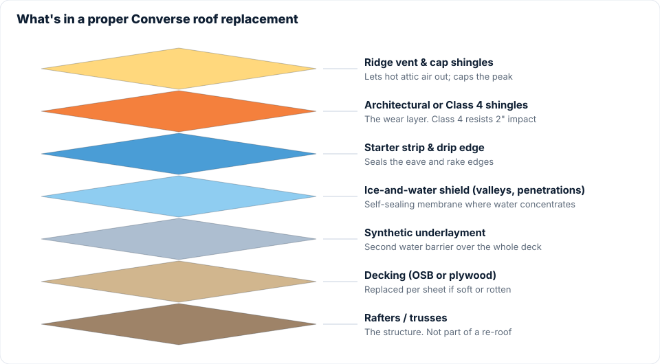

If the September 11 storm hit your house, the claim process is less scary than it sounds. Here's how it generally goes, in order, with the Texas-specific rules that matter.
Step 1: Get the roof inspected before you call
Calling your insurer before you know what's up there can work against you. A claim with no damage found still goes on your record. A free inspection from a local roofer gives you photos, a hit count per slope, and a written repair estimate, so you can make your own decision about filing.
Step 2: Read your policy (the two things that matter)
- Deductible. Many Texas policies now carry a percentage wind/hail deductible, often 1% to 2% of the dwelling coverage. On a $300,000 home a 2% deductible is $6,000. Know this number before you file.
- RCV vs. ACV. Replacement Cost Value pays what a new roof costs (part up front, the "depreciation" after the work is done). Actual Cash Value pays a depreciated amount and you cover the gap. Some carriers have quietly moved roofs to ACV schedules. Check.
Step 3: File the claim
Call the claims number on your policy or file through the app. Keep it factual: "My roof was damaged by hail in the September 11, 2026 storm. I've had it inspected and there is hail damage on multiple slopes." Give the date of loss as September 11, 2026. Write down the claim number.
Step 4: The adjuster visit
Your carrier assigns an adjuster who'll schedule a roof visit, usually within one to three weeks after a big regional storm. You can ask your roofer to be present so the adjuster can see the damage documented in the inspection report and ask questions about the repair estimate. The adjuster, not the roofer, decides what the policy covers.

Step 5: The estimate and the first check
You'll receive a scope of work (usually an Xactimate printout) and, on an RCV policy, a first check for the ACV amount minus your deductible. Compare it with your contractor's written estimate. Items that are sometimes left off an initial estimate include drip edge, ice-and-water shield in valleys, starter strip, ridge cap, code-required ventilation, and steep or high-roof labor. If something you need is missing, you can ask your insurance company about it directly; your contractor can supply the estimate and photos you'll want to reference.

Step 6: The work, and the depreciation check
Once the roof is done we send the carrier the invoice and completion photos, and they release the recoverable depreciation. You pay your deductible to us directly, and that's it.
Texas rules every homeowner should know
- Deductible waivers are illegal. Since September 2019, a contractor who offers to pay, waive or "absorb" your deductible is committing a Class B misdemeanor, and your insurer can require proof you paid it. Walk away from anyone who offers.
- No state roofing license. Texas doesn't license roofers. That's why you check for general liability insurance, a local physical presence, and references you can actually call.
- You choose your contractor. Your insurer can suggest a "preferred vendor" but can't require you to use one.
- Prompt payment. Texas Insurance Code Chapter 542 sets deadlines for carriers to acknowledge, investigate and pay claims. Slow-walking has consequences.
- Help if you're stuck. The Texas Department of Insurance consumer help line is 800-252-3439.
If the claim is denied or underpaid
- Ask for the denial in writing with the adjuster's photos.
- Request a re-inspection with a different adjuster. Bring your own photo report.
- Ask your agent whether your policy has an appraisal clause and how it works.
- File a complaint with TDI if the carrier isn't following the process.
Whatever route you take, the roof still needs a written estimate and someone to fix it. Book a free inspection or call 956-465-6045.